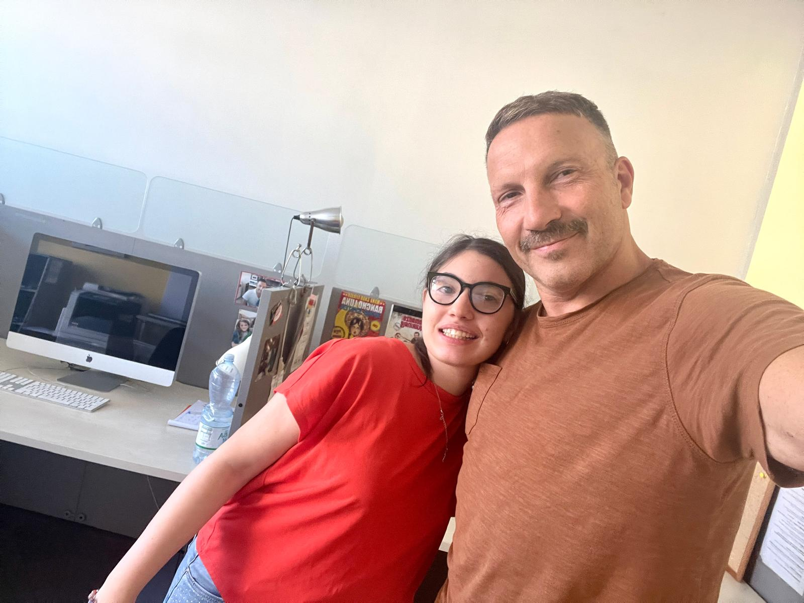

Mauro Luminari
Mauro Luminari è stato il mio tutor aziendale durante l'esperienza di FSL presso Creative Project. La sua guida professionale mi ha permesso di applicare sul campo le competenze di sviluppo web acquisite all'IIS Marconi Pieralisi, comprendendone le dinamiche reali.
Creative Project
Ho svolto la FSL presso Creative Project, agenzia di comunicazione visiva
e Web design.
L'esperienza mi ha permesso di uscire dalla teoria scolastica
ed entrare nella progettazione web professionale, scoprendo come codice e creatività
si uniscono per costruire interfacce efficaci, identità di brand e comunicazione
con i clienti.

Verso il Web Interaction Design
La FSL è stata la scintilla che ha trasformato un interesse in un progetto
concreto e mi ha confermato la mia intenzione di proseguire gli studi
all'Accademia di Belle Arti di Macerata, nel corso di
Web Interaction Design.
Il PCTO è stata la scintilla
che ha trasformato un interesse in un progetto concreto.
Relazione dell'Esperienza
Ho documentato il percorso di stage in una relazione finale che include dettagli tecnici, i progetti affrontati e le competenze trasversali acquisite. Puoi scaricarla in formato PDF qui sotto.